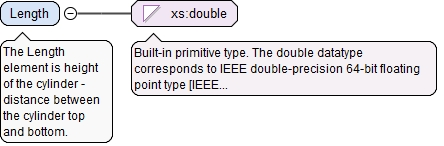

<xs:element name="Diameter" type="xs:double"><xs:annotation><xs:documentation>The Diameter element is diameter of the cylinder.</xs:documentation></xs:annotation></xs:element>
The Length element is height of the cylinder - distance between the cylinder top and bottom.
Diagram

Type
xs:double
Properties
content
simple
Source
<xs:element name="Length" type="xs:double"><xs:annotation><xs:documentation>The Length element is height of the cylinder - distance between the cylinder top and bottom.</xs:documentation></xs:annotation></xs:element>
<xs:element name="Axis" type="AxisType"><xs:annotation><xs:documentation>The Axis is the unit axis vector of the cylinder.</xs:documentation></xs:annotation></xs:element>
The Sweep element gives the start direction and the swept angle for the cylinder. The StartVector of the Sweep must lie in a plane normal to the axis of the cone.
<xs:element name="Sweep" type="SweepType"><xs:annotation><xs:documentation>The Sweep element gives the start direction and the swept angle for the cylinder. The StartVector of the Sweep must lie in a plane normal to the axis of the cone.</xs:documentation></xs:annotation></xs:element>
The optional turnedV attribute shows if the v direction of the cylinder must be inverted. A value of 1 (or true) means the v direction must be inverted. A value of 0 (or false) means the v direction must not be inverted.
Source
<xs:complexType name="Cylinder23CoreType"><xs:annotation><xs:documentation>The Cylinder23CoreType defines the mathematical core of the geometric entity 'cylindrical_surface(u,v):R2->R3'.</xs:documentation></xs:annotation><xs:complexContent><xs:extension base="SurfaceCoreBaseType"><xs:sequence><xs:element name="Diameter" type="xs:double"><xs:annotation><xs:documentation>The Diameter element is diameter of the cylinder.</xs:documentation></xs:annotation></xs:element><xs:element name="Length" type="xs:double"><xs:annotation><xs:documentation>The Length element is height of the cylinder - distance between the cylinder top and bottom.</xs:documentation></xs:annotation></xs:element><xs:element name="Axis" type="AxisType"><xs:annotation><xs:documentation>The Axis is the unit axis vector of the cylinder.</xs:documentation></xs:annotation></xs:element><xs:element name="Sweep" type="SweepType"><xs:annotation><xs:documentation>The Sweep element gives the start direction and the swept angle for the cylinder. The StartVector of the Sweep must lie in a plane normal to the axis of the cone.</xs:documentation></xs:annotation></xs:element></xs:sequence><xs:attribute name="turnedV" type="xs:boolean" default="false"><xs:annotation><xs:documentation>The optional turnedV attribute shows if the v direction of the cylinder must be inverted. A value of 1 (or true) means the v direction must be inverted. A value of 0 (or false) means the v direction must not be inverted.</xs:documentation></xs:annotation></xs:attribute><xs:attribute name="scaleU" type="DoublePositiveType" default="1.0"><xs:annotation><xs:documentation>The optional scaleU attribute is the scaling coefficient of the u direction of the parametric space.</xs:documentation></xs:annotation></xs:attribute><xs:attribute name="scaleV" type="DoublePositiveType" default="1.0"><xs:annotation><xs:documentation>The optional scaleV attribute is the scaling coefficient of the v direction of the parametric space.</xs:documentation></xs:annotation></xs:attribute></xs:extension></xs:complexContent></xs:complexType>
The optional turnedV attribute shows if the v direction of the cylinder must be inverted. A value of 1 (or true) means the v direction must be inverted. A value of 0 (or false) means the v direction must not be inverted.
<xs:attribute name="turnedV" type="xs:boolean" default="false"><xs:annotation><xs:documentation>The optional turnedV attribute shows if the v direction of the cylinder must be inverted. A value of 1 (or true) means the v direction must be inverted. A value of 0 (or false) means the v direction must not be inverted.</xs:documentation></xs:annotation></xs:attribute>
<xs:attribute name="scaleU" type="DoublePositiveType" default="1.0"><xs:annotation><xs:documentation>The optional scaleU attribute is the scaling coefficient of the u direction of the parametric space.</xs:documentation></xs:annotation></xs:attribute>
<xs:attribute name="scaleV" type="DoublePositiveType" default="1.0"><xs:annotation><xs:documentation>The optional scaleV attribute is the scaling coefficient of the v direction of the parametric space.</xs:documentation></xs:annotation></xs:attribute>